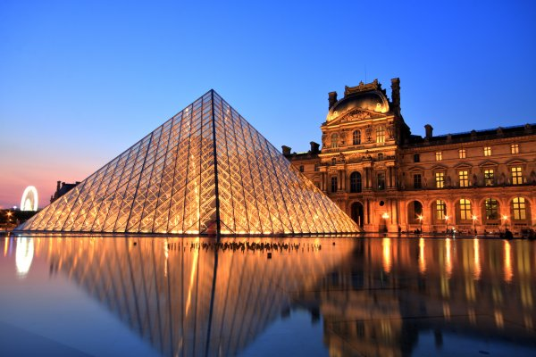
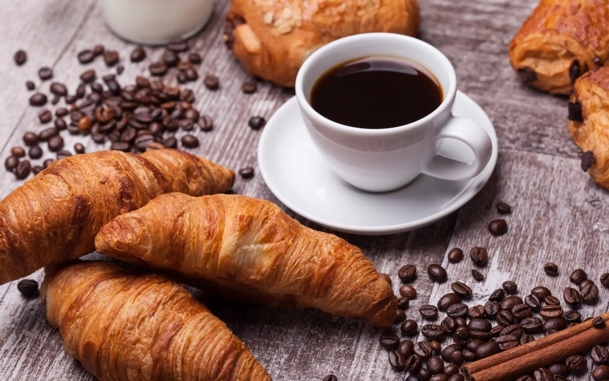
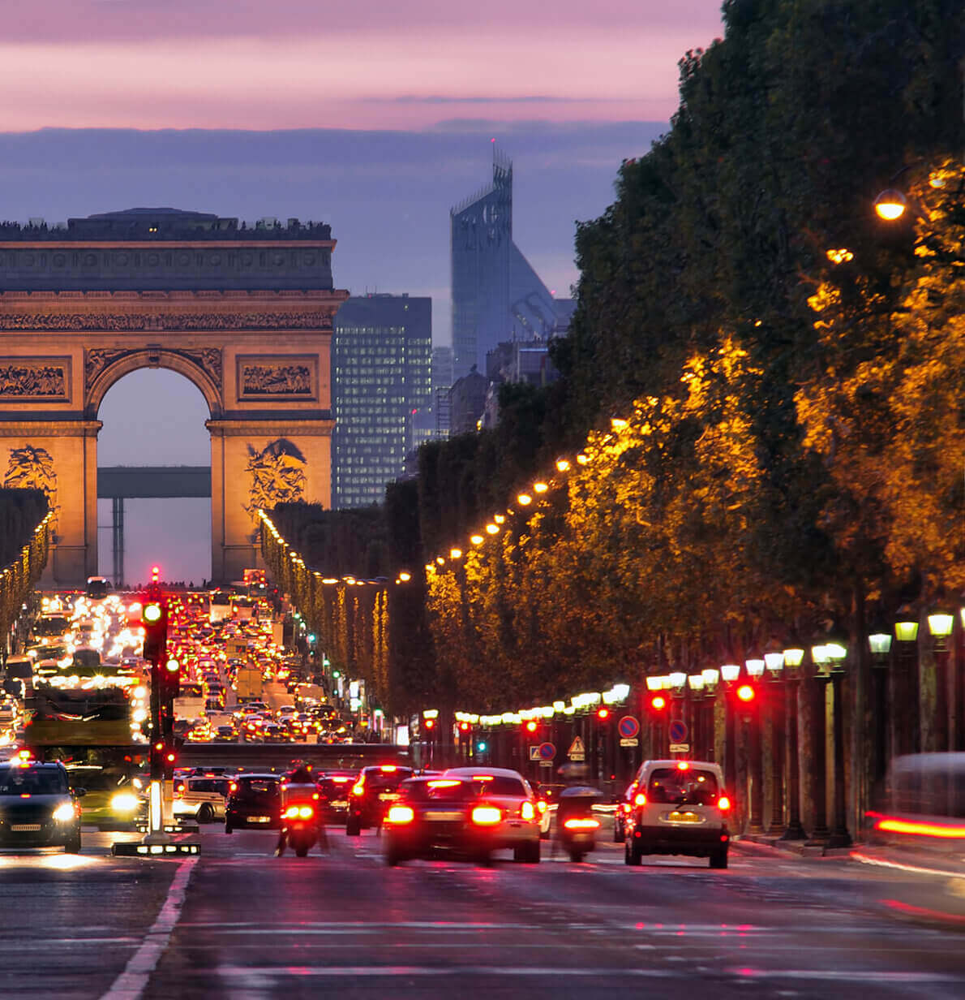

Визначні пам’ятки 🗼
Звісно, ми не могли оминути Ейфелеву вежу, але найбільше нас вразив Монмартр з його вузькими вуличками, базилікою Сакре-Кер та неймовірним Лувром у вечірніх вогнях.

Кухня та гастрономія 🍷
Справжній французький круасан та кава у маленькому бістро — це обов'язковий ритуал. Також ми спробували традиційний цибулевий суп та неперевершені макарони (macarons).

Культура та традиції 🎨
Парижани дуже цінують свій особистий простір і неквапливий ритм життя (l'art de vivre — мистецтво жити). Сидіти на терасі кафе, спостерігаючи за перехожими, — це окремий вид мистецтва тут.
